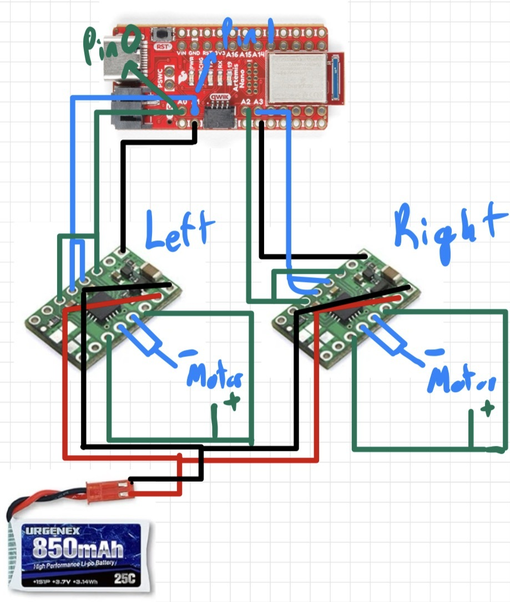
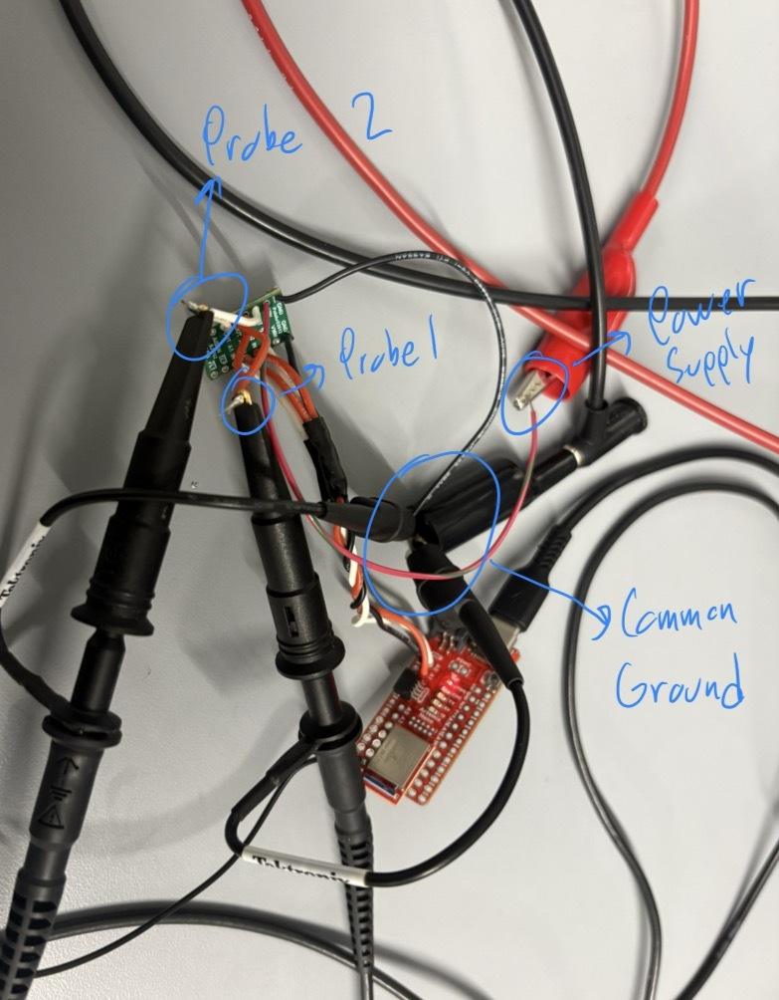
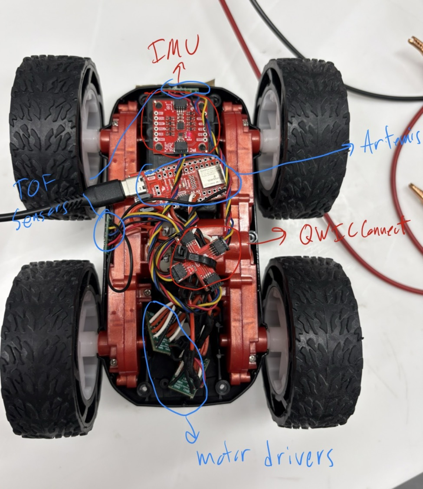

Prelab
Diagram: Motor Drivers, Artemis, and Battery Connections
This diagram shows my intended wiring between the motor drivers, Artemis, and battery. The diagram includes the specific Artemis pins used for PWM and direction control. I had to ensure that the pins I chose for PWM to the motors were in fact PWM capable, slightly limited my options. The pins I chose allow for the artemis to be positioned such that all the pins for the motor drivers face the same direction, allowing fo rmore simple wiring and a cleaner layout.

Battery Discussion
The Artemis microcontroller and the motors are powered using separate batteries. The Artemis is powered by a 650 mAh battery, while the motors are powered by a 850 mAh battery connected through the motor drivers. Using separate power sources helps prevent electrical sudden changes in voltage or current that can occur when the motors start, stop, or change speed. Thus, ensuring that the ARTEMIS is unaffected by these sharp changes. Because the Artemis operates within a limited voltage range, this voltage drop could cause the microcontroller to reset or shut down unexpectedly. By isolating the motor power from the logic power, the control electronics remain stable even when the motors draw large currents. This separation improves reliability and ensures that the Artemis continues running during rapid motor acceleration. This separaton also allows for more dedicated voltage to be given to the motors, allowing for faster speeds.
Lab Tasks
Setup with Power Supply and Oscilloscope Hookup
Below is a picture of my test setup showing the power supply connections and oscilloscope probe hookup to the motor driver input.

Power Supply Setting Discussion
For the power supply, the motors can handle between 2.7V and 10.8V, however I set the power supply to 3.7V to emulate the voltage given by the 850 mAh battery we are using for the motor drivers. This can be seen in the beginning of the Motor Driver PWM test video.
analogWrite Motor Driver Test Code
This code snippet cycles PWM values to test the motor driver response. It was used with the oscilloscope to verify duty cycle and with the wheels to confirm expected behavior across a range of PWM values. To do this I wrote a loop to run through 0 to 255 for PWM values to test the full range.
// Analog motor driver test code used to verify PWM control
#define REVERSE 2 // Connected to AIN1 / BIN1
#define PWM 3 // Connected to AIN2 / BIN2
void setup(){
pinMode(REVERSE, OUTPUT);
pinMode(PWM, OUTPUT);
}
void loop(){
// Set direction HIGH
analogWrite(REVERSE, 255);
// Gradually increase PWM power
for(int i = 0; i < 255; i = i + 1){
analogWrite(PWM, i);
delay(20);
}Oscilloscope
Below is a video of the oscilloscope measurement showing PWM behavior, as well as the code and power supply setup.
Wheels Spinning as Expected
Below is the video showing the wheels spinning as expected during bench testing. This video corresponds to the PWM test code above.
Both Wheels Spinning with Battery Power
Below is the video for the wheels spinning under battery power.
Components Secured in the Car
Below is a picture of all components secured in the chassis. If parts are difficult to see in the photo, labels are added to clarify component placement.

Lower Limit PWM and Calibration
Lower Limit PWM Value Discussion
The lower limit of my PWM for the motor drivers is around 47 for the right motor, and 79 for the left motor. In order to counter this offset, I added a calibration value in later code to allow for consistent motor drive from both motors, this value adds 32 to the set value only for the left motor.
Calibration Demonstration
Below is the video of the car driving roughly straight (there was a small angle to the tape measure).
Open Loop Control
Open Loop Code
This section contains the open loop driving code used to move the car.
#define L_DIR 1
#define L_PWM 0
#define R_DIR 2
#define R_PWM 3
const int pwm_val = 50;
const int calibration = 32; // left-side offset
const int turn_val = 100;
void setup() {
pinMode(L_DIR, OUTPUT);
pinMode(L_PWM, OUTPUT);
pinMode(R_DIR, OUTPUT);
pinMode(R_PWM, OUTPUT);
// -------- Drive straight forward --------
digitalWrite(L_DIR, LOW);
digitalWrite(R_DIR, LOW);
analogWrite(L_PWM, min(255, pwm_val + calibration));
analogWrite(R_PWM, pwm_val);
delay(1200);
// Stop
analogWrite(L_PWM, 0);
analogWrite(R_PWM, 0);
digitalWrite(L_DIR, LOW);
digitalWrite(R_DIR, LOW);
delay(1000);
// -------- Turn LEFT (in-place) --------
digitalWrite(L_DIR, HIGH);
digitalWrite(R_DIR, LOW);
analogWrite(L_PWM, min(255, turn_val + calibration));
analogWrite(R_PWM, turn_val);
delay(500);
// Stop
analogWrite(L_PWM, 0);
analogWrite(R_PWM, 0);
digitalWrite(L_DIR, LOW);
digitalWrite(R_DIR, LOW);
delay(1000);
// -------- Turn RIGHT (in-place) --------
digitalWrite(L_DIR, LOW);
digitalWrite(R_DIR, HIGH);
analogWrite(L_PWM, min(255, turn_val + calibration));
analogWrite(R_PWM, turn_val);
delay(500);
// Stop
analogWrite(L_PWM, 0);
analogWrite(R_PWM, 0);
digitalWrite(L_DIR, LOW);
digitalWrite(R_DIR, LOW);
}
void loop() {}
Open Loop Video
Below is a video showing open loop motion and highlights any drift due to mismatch.
References
For this lab I worked with Coby Lai extensively, I also referenced the student pages of Aidan Mcnay and Aidan Derocher. I used AI to check code and syntax when issues arose.